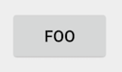
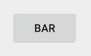
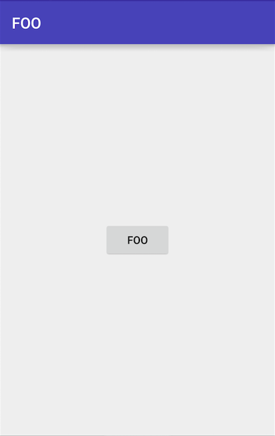
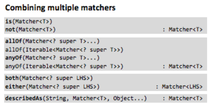
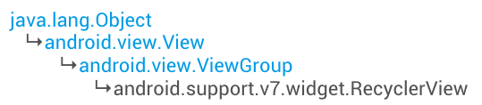

Espresso
Give Your App An UI Test
Created by George Lin / @georgelin422
Benifits
- Scheduled + Automatic
- so you don't miss a click
- Automatic Synchronization of the UI
- no need for
sleep(unknown_secs)
Set Up Espresso
Step 1 Download Support Library
- In Android Studio: Tools -> Android -> SDK Manager
- Click SDK Tools Tab and you'll find Android Support Repository
- Click the Install packages... button
Step 2 Edit build.gradle
dependencies {
androidTestCompile 'com.android.support.test:runner:0.4'
// Set this dependency to use JUnit 4 rules
androidTestCompile 'com.android.support.test:rules:0.4'
// Set this dependency to build and run Espresso tests
androidTestCompile 'com.android.support.test.espresso:espresso-core:2.2.1'
}
And DONE!
Basics of Espresso
Find View, Perform Actions, Check
Find View, Perform Actions, Check
onView(ViewMatcher) .perform(ViewAction) .check(ViewAssertion)
Find View, Perform Actions, Check
onView(withId(android.R.id.button1)) .perform(ViewAction) .check(ViewAssertion)
Find View, Perform Actions, Check
onView(withId(android.R.id.button1)) .perform(click()) .check(ViewAssertion)
Find View, Perform Actions, Check
onView(withId(android.R.id.button1))
.perform(click())
.check(matches(withText("BAR")))


Combining Matchers
with HamcrestTest case: if the Toolbar title is "FOO"
The title is a TextView with a parent of class Toolbar
onView(allOf(isAssignableFrom(TextView.class),
withParent(isAssignableFrom(Toolbar.class))))
.check(matches(withText("FOO")))

http://www.marcphilipp.de/downloads/posts/2013-01-02-hamcrest-quick-reference/Hamcrest-1.3.pdf
testCompile 'org.hamcrest:hamcrest-library:1.3'
onView(allOf(isAssignableFrom(TextView.class),
withParent(isAssignableFrom(Toolbar.class))))
.check(matches(withText("FOO")))
GG in this case
<Toolbar
android:id="@+id/toolbar"
android:layout_width="match_parent"
android:layout_height="?attr/actionBarSize"
android:background="?attr/colorPrimary">
<TextView
android:layout_width="wrap_content"
android:layout_height="wrap_content"/>
<TextView
android:layout_width="wrap_content"
android:layout_height="wrap_content"/>
<TextView
android:layout_width="wrap_content"
android:layout_height="wrap_content"/>
</Toolbar>
Custom Matchers
Test case: if the Toolbar title is "FOO"
Veryfy the Toolbar itself, not verify descendant TextView
onView(isAssignableFrom(Toolbar.class))
.check(ViewAssertion)
onView(isAssignableFrom(Toolbar.class))
.check(Assert this Toolbar has its title "FOO")
onView(isAssignableFrom(Toolbar.class))
.check(matches(withToolbarTitle("FOO")))
onView(isAssignableFrom(Toolbar.class))
.check(matches(withToolbarTitle("FOO")))
public static Matcher<View> withToolbarTitle(CharSequence title) {
return withToolbarTitle(is(title)); // is(T) from Hamcrest
}
public static Matcher<View> withToolbarTitle(final Matcher<CharSequence> textMatcher) {
checkNotNull(textMatcher);
return new BoundedMatcher<View, Toolbar>(Toolbar.class) {
@Override
public void describeTo(Description description) {
description.appendText("with title: ");
textMatcher.describeTo(description);
}
@Override
public boolean matchesSafely(Toolbar toolbar) {
return textMatcher.matches(toolbar.getTitle());
}
};
}
Test AdapterView
Using onData
Why not use onView?
onData(ObjectMatcher) .DataOptions // reference DataInteraction.java .perform(ViewAction) .check(ViewAssertion)
Click item with String "Americano" in a Spinner
onData(allOf(is(instanceOf(String.class)), is("Americano")))
.inAdapterView(R.id.spinner)
.perform(click());
Test RecyclerView
RecyclerView is NOT an AdapterView
onData
RecyclerView is a ViewGroup
So, use onView
Click item at position 27
onView(withId(R.id.recycler_view)) .perform(RecyclerViewActions.actionOnItemAtPosition(27, click()));
in build.gradle
androidTestCompile 'com.android.support.test.espresso:espresso-contrib:2.2'
More in espresso-contrib
- DrawerLayout
- DatePicker and TimePicker
Idling Resource
When we talk about Espresso's Synchronization, it means...
When doing tests...
- no UI events in the current message queue
- no tasks in the default AsyncTask thread pool
In some cases, we need to define out own Idling Resource
Implement IdlingResource and override three methods
@Override public String getName() {
return IntentServiceIdlingResource.class.getName();
}
@Override public void registerIdleTransitionCallback(
ResourceCallback resourceCallback) {
mResourceCallback = resourceCallback;
}
@Override public boolean isIdleNow() {
boolean idle = !isIntentServiceRunning();
if (idle && resourceCallback != null) {
mResourceCallback.onTransitionToIdle();
}
return idle;
}
Register your IdlingResource in test
@Before
public void registerIntentServiceIdlingResource() {
idlingResource = new IntentServiceIdlingResource(
InstrumentationRegistry.getTargetContext());
Espresso.registerIdlingResources(idlingResource);
}
@After
public void unregisterIntentServiceIdlingResource() {
Espresso.unregisterIdlingResources(idlingResource);
}
Run Espresso Test
Step 1 Connect Device
Make sure your device is connected with usb
Step 2 Turn Off Animations
Turn off animations from Settings by opening Developing Options and turning all the following options off:
- Window animation scale
- Transition animation scale
- Animator duration scale
Step 3 Run
./gradlew connectedAndroidTest
Review
- Automatic Synchronization
- Set up Espresso
- Basic - find view, perform actions, check
- Hamcrest - logical combinations for tests
- Costum matchers
- Test AdapterView
- Test RecyclerView
- Idling Resource
- Run Espresso tests